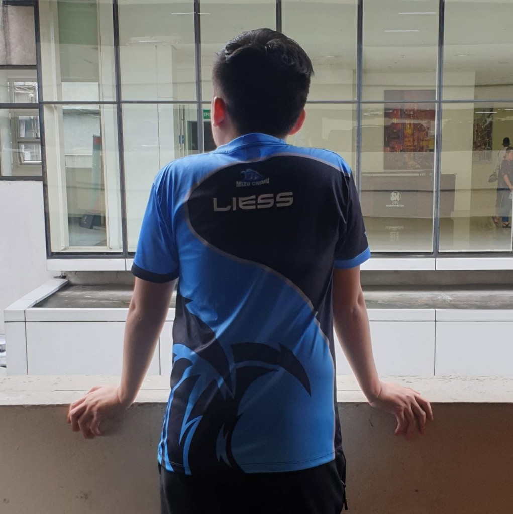
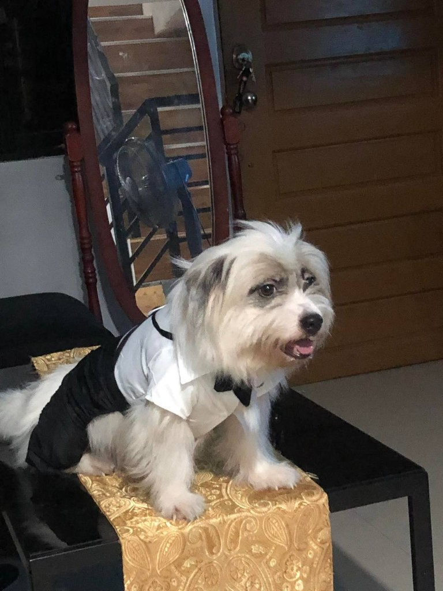
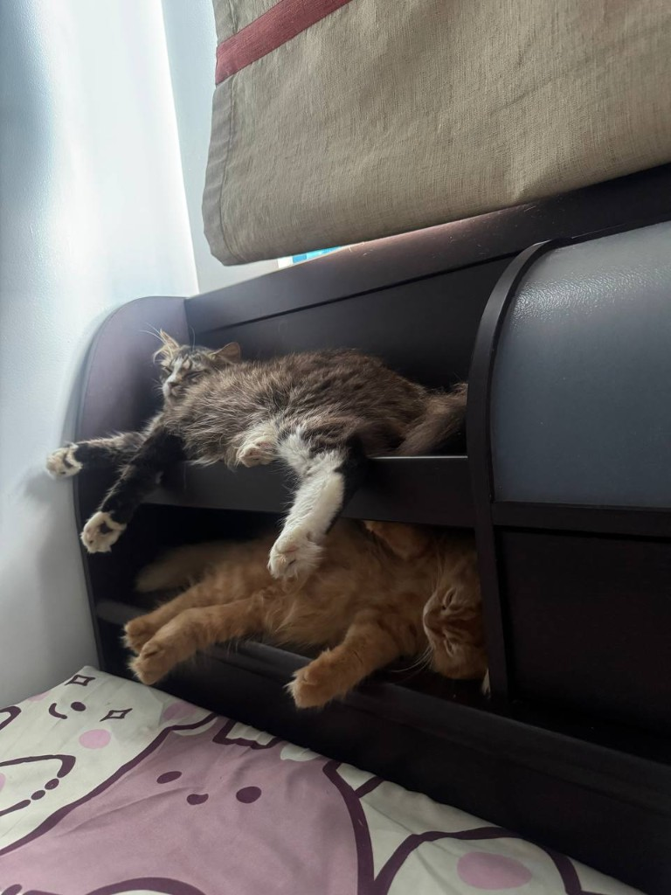
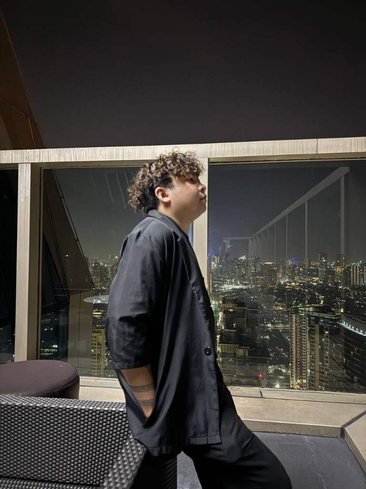

I love collecting perfumes from local, designer, and niche fragrance houses. I also collect a signature perfume from each country I visit. My favorites are Amouage Outlands as my signature scent and Louis Vuitton Pacific Chill for a clean, fresh scent.
Side quest
Off the
client clock
Integrations pay the bills. This page is the rest: who I am off the resume, places I land, the room I work from, camera notes, and writing that is not a RAML spec.
01 — More into me
Off the resume, still me
Pictures, a few facts that do not belong on a CV, and the rest of the page.
Lead Consultant by weekday. The rest is slower: a kitchen that is not a standup, a suitcase that keeps filling, and a desk that stays on after the last merge.
I live in the Philippines. I build APIs for a living, tutor models on the side, and spend the leftover hours on trips, food, and whatever camera I remembered to charge. The career page has the client work. This block is the person who closes the laptop.
- Based
- Philippines
- Hobbies
- Badminton, gaming, travel, consuming anime and manga
- Interests
- AI, Crypto, Investments, vlogging, work-life balance and min-maxing life
Trivia
Not on the resume
I was once a professional esports player for Mobile Legends: Bang Bang (MLBB). I named our team “Mizu Chimu,” which means “water team,” because my teammates were also my workmates at a water utility company.

I’m both a cat lover and a dog lover. Mochi and Sachi🐱 PanPan🐶


I was once quite active in the crypto space and built a significant following around it. However, I wasn’t able to fully commit to it because of my busy schedule. You can check out my old page here: NesFBPH on Facebook.
I love rooftops. Whenever I’m feeling down, I like to hang out at my favorite rooftop spots. I’ve explored so many rooftops around Metro Manila that I’ve practically memorized all the best ones.

At one point in my life, I covered weddings and worked as a drone pilot. I was fascinated by the idea of capturing weddings from a unique perspective, but eventually realized that I didn’t want to get married myself.
I enjoy tactical and strategy games, and I occasionally play shooters as well. I peaked at Diamond in both League of Legends and Teamfight Tactics (TFT), and Platinum in Valorant. My favorite game of all time is Assassin’s Creed II, while Warcraft and StarCraft are my favorite strategy games.
I’m afraid of heights and deep water, but I’ve always believed in challenging myself. That’s why I enrolled in swimming and freediving lessons to overcome those fears. Skydiving is next on my list.
My favorite food is lechon kawali, which I ate almost every day during my lunch break throughout my college years. It became a staple of my college life and still holds a special place in my heart.
Travel
Stamps that are not Jira tickets. The atlas below is the log.
Open the map →Camera
Desk tours and trip fragments. The vlog is queued until the first cut is public.
Vlog notes →The desk
Warm lamps, dual display, Anypoint and Cursor still open after hours.
Workstation →03 — Travel
Where work and weekends overlap
A personal atlas. Hover a country, click a pin, open the city gallery.
This is my world
Drag to pan · scroll to zoom · click a pin for the city gallery.
04 — Personal space & workstation
The room behind the stand-ups
Two corners of the same apartment: where I live, and where Anypoint stays open.
Workstation · live desk
Move · hover to light · click to play
Personal space
Low light, plants if they survive me, and a couch that is not for Slack. This is the off-duty half: music, a book, and no production alerts on the wall.
Quiet hours
Home cooking
No stand-up sofa
The kit
Consultant kit in the clip above: warm lamps, a real desk, Anypoint Studio, Cursor, and a notes app that holds RAML fragments I should have committed already.
Anypoint Studio
Cursor
Dual display
Noise-cancelling
05 — Vlog
Camera when the build is done
Short clips: desk tours, travel fragments, and whatever is not an incident channel.
First episode is not up yet
-
01
Queued
Travel fragment
Airport wifi, one meal, one street.
-
02
Queued
Setup tour
Monitors, cables, and the one plant that lived.
-
03
Queued
After hours
What I watch and cook when Runtime Manager is quiet.
06 — Blogs
Writing that is not a Jira comment
Longer notes on travel, the desk, and the work — published here as they exist. Write in CMS
Show more blog postsMore later
Photos, embeds, and full posts land as I make them. The career page stays for the client work.
← Back home
02 — Socials
Find me off the clock
Discord, YouTube, Twitter, and Instagram. LinkedIn stays on the career page.
Discord
neskopi
YouTube
Nes
X
@NesqqTFT
Instagram
@its.nesqq